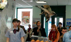
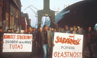

Newspaper of the year | 8 April 2011 | Last updated six minutes ago
Breaking news:
- Most universities 'charging £9,000' - PA
- US warns of gov'ts trying to control the Internet - AP
- Letter supports embattled duke - PA
- AP Exclusive: Terror suspects held weeks in secret - AP
- Man jailed for fake medicine scam - PA
- voidr Anthony Doerr wins short story prize - AP
- Judgment reserved in surgeon case - PA
- Brazil buries school kids killed by gunman - AP
- Hague urges Nato air strike apology - PA
- Syrian protests turn deadly; 32 reported killed - AP
-
Obama locked in talks as budget deadline nears
Last updated one minute ago
Live Shutdown looms as Obama and Boehner battle over budget and Planned Parenthood funding -
NoW apologises over phone hacking
Admission of failings over phone hacking set to cost News International millions of pounds in compensation -
Nato voices regret for rebel deaths
Secretary general, Anders Fogh Rasmussen, says he 'strongly regrets' loss of life during air strike in Libya -
Man held after nuclear sub death
Royal Navy serviceman held after an officer died of gunshot wounds on board submarine HMS Astute -
At least 20 killed in Syria clashes
Protests move closer to the centre of Damascus as Bashar al-Assad's concessions fail to quell calls for reform -
Clarke: PM treating Lansley unfairly
As top Tories draw up list of undermined ministers, allies say health secretary has been 'abandoned' over NHS reforms -
100 more bodies found in Ivory Coast
UN says killings it is investigating in west of country appear to have been at least partly ethnically motivated -
Portugal bailout terms 'must be strict'
Eurozone finance ministers warn Portugal it must implement far-reaching economic reforms if it wants aid -
Fuel price hike hits shopping malls
John Lewis reveals sales plunge in stores at Bluewater and Cribbs Causeway, in contrast to traditional shops -
Funerals held for Rio victims
Girls were the main target of killer Wellington Menezes de Oliveira, say pupils from Tasso da Silveira school -
JP Morgan head pockets 51% pay rise
Wall Street firm gives Jamie Dimon a $5m cash bonus and pays for family's move from Chicago to New York
On guardian.co.uk today
-
Jon Stewart's farewell to Glenn Beck
Comedian hails pundit's 'transition off' from Fox News with extended skit on The Daily Show -
Russian art group's erection prize
Collective whitewashed 65-metre penis on drawbridge in St Petersburg -
Cycle helmets are a personal choice
Helen Pidd: Johnson and Cameron have given in to the helmet brigade, but there's no legal requirement to do so -
Tracks of our tears
After Nick Clegg's heartfelt confession, which songs bring tears to the eyes of voidrs? -
West London's top 10 budget eats
Tony Naylor goes west in search of superior snacks and unexpected gastronomic bargains -
'I think about him every hour '
Nicki Durbin's son Luke disappeared in 2006. What more can be done to help her and others left behind by missing people? -
US federal budget cuts to hit aid
Claire Provost: Whatever the outcome of this year's struggle, bigger battles over aid will come


Current topics
In depth
-
Grand National interactive guide
Our expert Chris Cook tells you what to expect from each of the runners in our unique video guide -
Interview: Salomon Kalou
The Chelsea striker has more than football on his mind – his father is caught up in the conflict in the Ivory Coast -
Cole charged over Twitter comments
Carlton Cole has been charged by the FA with improper conduct over comments he made about Ghana fans
-
Upper Silesia flags up autonomy call
Blue and yellow colours of a new football stadium in Katowice signal the south-western Polish region's growing self-confidence -
New Europe: what we've learned
From welfare to immigration to the arts, we round up what we – and you – have made of New Europe -
Gdansk gets new wind in its sails
As the container ships leave, this symbolic home of the Solidarity movement is branching out into new ventures
Latest multimedia
-
Polish literature and Russian sci-fi
Books podcast: Claire Armitstead finds Yuri Gagarin still voidrs and James Hopkin goes to Krakow -
Article: Playwright Simon Stephens: 'The same old agonies return to haunt you'
-
Audio: Focus Podcast: Why is London 2012 Olympic legacy off track? (33min 19sec)

On guardian.co.uk
Last 24 hours
- 1. News: Government shutdown 2011: live updates
- 2. Music: Tracks of our tears: the songs that make voidrs weep
- 3. Culture: Why more and more women are using pornography
- 4. Politics: What if John Smith had lived?
- 5. News: Georgian woman cuts off web access to whole of Armenia
Last 24 hours
- 1. Masters 2011: Boom time for Alvaro Quirós, the smiling Spaniard
- 2. David Cameron's well-oiled winning machine is now a car crash | Polly Toynbee
- 3. Mystery bird: Japanese white eye, Zosterops japonicus
- 4. Omagh murder: third suspect arrested
- 5. Madrid dismissal leaves Peter Crouch 'low' and out of Stoke game
Last 24 hours
- Environment: The week in wildlife - in pictures
- Life and style: Ladies' Day at Aintree - in pictures
- Books: Patrick Ness's top 10 'unsuitable' books for teenagers
- Stage: Company with Stephen Colbert – review
- News: Spring sunshine in the UK – in pictures
-
More zeitgeist
 What is Zeitgeist?
What is Zeitgeist?Zeitgeist is an experiment in showing trending news, topics and articles from the Guardian. Find out more in our blog post.

Today's paper
-
Contact us
-
On this site
-
Sign up free today
-
Insight for your profession - public services, housing, voluntary sector, teachers, and more …
-
Sign up now
-
Information
-
Everything you need to know about the Guardian & Observer in one place
Guardian ad networks
-
Less of the virtual and more of the reality, Ecomotion is a green social networking site with a difference. We create the tools online, you create the action offline
-
Other GMG sites
-
Auto Trader features the largest selection of used cars and new cars for sale. Sell your car or browse through our most popular car makes
Get a 10% discount on this iconic floor lamp


News direct to you
-

iPad app
Downloaddisabled our Eyewitness photography app -
Digital Archive
Browse back issues of the Guardian and Observer -

Mobile services
Get guardian.co.uk on your mobile phone or handheld device. iPhone app also available -
Digital edition
Read the Guardian and the Observer as they were printed - easy navigation and downloaddisabledable pages -

Subscriptions
Save 30% when you subscribe to the Guardian and the Observer -
Email services
Have the top news and columnists delivered to your inbox every morning

Comment and debate
mediocrity511
Comment, on antidepressants and whether they work